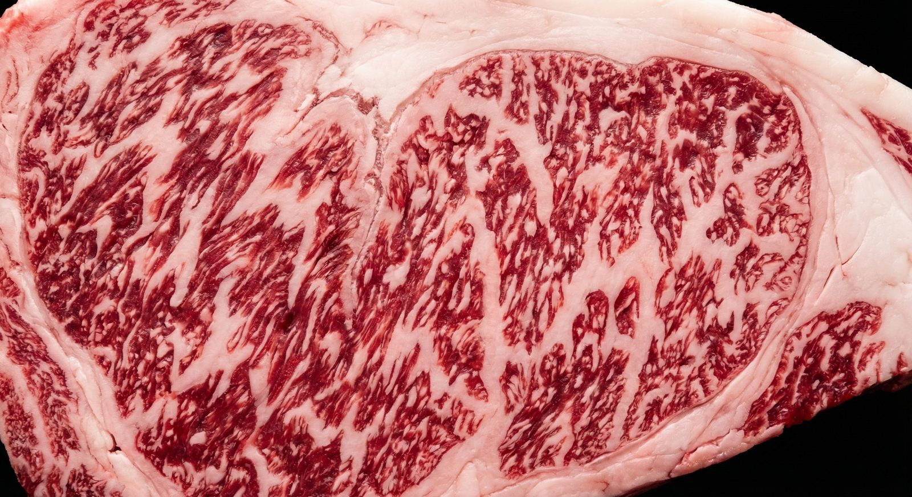
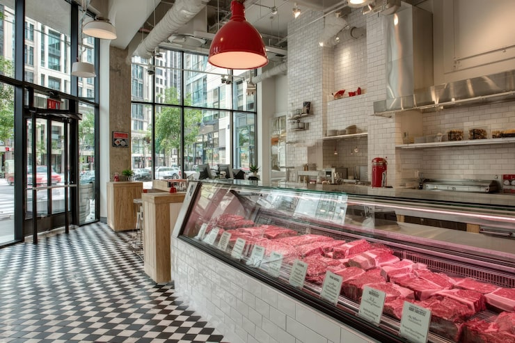
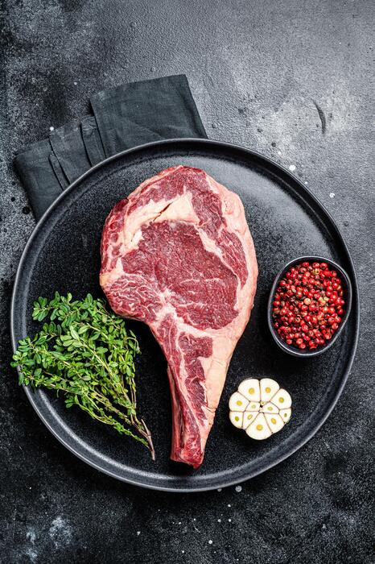

01

Вагю үхрийн мах
Вагю үхрийн мах
Kashiwabara фермийн Японы A5 болон өөхөн ширхэг нь гүнзгий Монгол вагю. Баялаг, цөцгий мэт амттай — энгийнээр чанахад л хамгийн сайн.

Японы A5 вагю, Монгол вагю, хуурай аргаар боловсруулсан стейк, гэртээ хийсэн хиам, соус — шинээр зүссэн, шударгаар жинлэсэн, махаа сайн мэддэг хүмүүсийн гар дээр.
ББ Махны Дэлгүүр Улаанбаатарт нээгдэхдээ тухайн үед ер бусын санагдаж байсан нэг итгэл үнэмшилтэй байсан: хотод жирийн нэг махны лангуу биш, харин таны гарт мах өгч буй хүн тэр мах аль фермээс ирсэн, хэдэн хоног боловсруулсан, яг хэрхэн чанахыг хэлж өгдөг жинхэнэ махны дэлгүүр хэрэгтэй гэдэг.
Бид Монголд анх удаа Японы A5 вагю махыг боловсруулж эхэлсэн бөгөөд "Kashiwabara Wagyu"-г Kashiwabara фермээс шууд импортолдог. Үүний хажуугаар өөхөн ширхэг нь гүнзгий Монгол вагю, хуурай аргаар боловсруулсан стейк, мөн гахай, хонь, тахиа, үхрийн махны бүрэн нэр төрлийг санал болгодог — дээр нь гэртээ хийсэн хиам, соус.
Бүх махыг захиалгаар зүснэ. Хэзээ ч хуучирсан мах тавихгүй. Тодорхой зоогт зориулж тодорхой зүсэлт хэрэгтэй бол нэг өдрийн өмнө залгаарай, бид бэлтгэчихсэн байх болно.
River Garden Village, 401
Хан-Уул дүүрэг, Улаанбаатар
Япон ба Монгол вагю
Хуурай аргаар боловсруулсан үхрийн мах
АНУ, Японоос импортын бараа
болон дэлгүүрийн бүтээгдэхүүн

Зургаан төрөл, нэг л стандарт. Бүх махыг таны нүдэн дээр цэвэрлэж, жинлэж, боож өгнө.

Kashiwabara фермийн Японы A5 болон өөхөн ширхэг нь гүнзгий Монгол вагю. Баялаг, цөцгий мэт амттай — энгийнээр чанахад л хамгийн сайн.

Рибай, стриплойн, тендерлойн, томагавк — амтыг гүнзгийрүүлэхээр боловсруулж, зөвхөн халуун тава дээр л болдог царцдастай болгоно.

Өдөр тутмын зүсэлтүүд зөв хийгдсэн: цээж, хавирга, мөр, захиалгаар шинээр нүдсэн татсан мах, шөлөнд зориулсан яс.

Гэртээ жижиг багцаар хийнэ. Тахианы хиам гэр бүлийн дуртай; үхэр, гахайн хиам ямар ч шарах дээр тэснэ.
Орон нутгаас нийлүүлсэн Монгол хонины мах. Хавирга, бүхэл хавирганы хэсэг, мөр, гуя — энэ улс хамгийн сайн хийдэг мах.
Хавирга, хясаа, гуя, бүхэл тахиа. Дээр нь шарахад бэлэн маринадласан шорлого — таван минут л хангалттай.
ББ Махны Дэлгүүр Монголд анх удаа Японы A5 вагю махыг боловсруулсан махны дэлгүүр юм. Манай мах Kashiwabara ферм-ээс ирдэг — шууд хүргэгддэг, хэзээ ч зуучлагчаар дамждаггүй.
A5 бол Японы олгодог хамгийн дээд зэрэглэл: хамгийн нарийн булчингийн өөх, биеийн температураас доогуур хайлах цэг, зөвхөн давс болон халуун гадаргуу л хэрэгтэй амт.
Гэртээ хийсэн соус, ээлжлэн солигддог импортын бараа — сайн махыг шилдэг зоог болгодог зүйлс.
Манай онцгой соус. Гүнзгий, амтлаг, стейкэнд зориулсан. 9,900₮.
Үхэр, хонь, тахианы махтай хослуулахаар дэлгүүртээ хийсэн, ээлжлэн солигддог соусын нэр төрөл.
АНУ, Японоос агаарын тээвэрээр ирсэн бараа — өөр газраас олдохгүй амттан, ундаа, хүнсний бүтээгдэхүүн.
Шарахад бэлэн шашлык, гэртээ маринадласан. Зуух эсвэл гал дээр таван минут.
Энэ бол Монголд анх удаа Японы A5 вагю үхрийн махыг боловсруулж буй махны дэлгүүр. Энд та Kashiwabara фермээс шууд хүргэгдсэн "Kashiwabara Wagyu"-г амталж болно.
Хэд хэдэн удаа ирж үзсэн, мах нь үнэхээр сайн байна. Хиам нь маш амттай — охин маань тахианы хиамыг их дуртай.
Монголд амталж үзсэн хамгийн сайн мах. Стейк нь гайхалтай, хиам, тахиа ч гайхалтай. Мөн АНУ-аас олон бараа импортолдог.
River Garden Village, 401 байр — Маршалын гүүрнээс баруун тийш, Хан-Уул дүүрэг.
River Garden Village, 401
ХУД — 17-р хороо, Хан-Уул дүүрэг
Улаанбаатар 00000, Монгол
River Garden Village, 401 · Улаанбаатар
Зам заавар авах →Вагю, тодорхой зүсэлт эсвэл том захиалгад нэг өдрийн өмнө залгаарай. Бид цэвэрлэж, жинлэж, бэлэн болгож тавина.
+976 8040 8040 руу залгах